Introducation
I’m not a native English Speaker. So that, this tutorial may have a lot of grammar and words problem. If you find any problem please tell me.
If you have any question or feedback, welcome join my Discord Server .
License

This work is licensed under a Creative Commons Attribution-NonCommercial-NoDerivatives 4.0 International License.
What is Forge?
This tutorial is a mod development tutorial based on Forge, so it's natural to answer the question, "What is Forge?
At first glance, this doesn't seem like a question at all, “Forge? Isn't Forge just Forge?” The first thought that comes to your inner mind when you see this question is probably this.
But it's necessary to answer this question, and I'm going to talk a little bit about what Forge is and the history of Forge. This may seem unrelated to our tutorial, but it is actually the "Lore" of mod development and learning it will help you communicate with others better.
We have to start with Minecraft itself, but first we have to make it clear that Minecraft is a commercial software written in Java. This means two things: first, Minecraft is relatively easy to modify, and second, the code itself is not open source and is obfuscated. Early on in Minecraft's history, because Mojang never provided an official API1 for Minecraft, the "Mod Coder Pack" project was born (hereinafter referred to as MCP).
Remember what I said earlier about the two features of Minecraft that MCP uses to implement a set of tools that allow developers to modify the content of Minecraft jar packs directly?
So srg name, notch name and mcp name were born.
So what are these three?
The first is the notch name, which is a name that Minecraft has directly decompiled and obfuscated, and is usually a meaningless alphanumeric combination. You can tell from the name Notch that it comes directly from Minecraft (and the grudge against Notch), for example u is a typical notch name.
Here is an example for notch name
public class cbw extends cbq {
public int u() {
return 0;
}
public int t() {
return 127;
}
}
Next is the srg name, which is a one-to-one correspondence with the notch name, and srg name will not change from one version to the next. The reason it is called srg name(srg meaning Searge) is to commemorate the leader of the MCP project, Searge. There are corresponding prefixes and suffixes to distinguish Searge and Notch names. Take the above u as an example, its srg name is func_214968_u.
public class NetherGenSettings extends GenerationSettings {
public int func_214968_u() {
return 0;
}
public int func_214967_t() {
return 127;
}
}
Finally there's the mcp name, the name we come across most in mod development. In mcp name, the code is already readable. It's the same as the names we use in our normal java programs. But the mcp name is subject to change. For example, the func_214968_u above has an mcp name of getBedrockFloorHeight. The class name in mcp name is the same as the class name in srg name.
public class NetherGenSettings extends GenerationSettings {
public int getBedrockFloorHeight() {
return 0;
}
public int getBedrockRoofHeight() {
return 127;
}
}
As time went on, mod developers realized that modding Jar files directly to write mods was too crude, and that mod-to-mod compatibility was virtually non-existent. So Forge was born.
Forge was actually a set of third-party APIs implemented by modifying the Minecraft way, and as time went on, MCP is now dead (some of MCP's tools are still alive). In addition to the Forge set of APIs, Fabric is also in the limelight, and Forge itself underwent a rewrite after Minecraft 1.13 arrived, introducing a number of APIs for functional programming.
So how did Forge use the three names we mentioned earlier?
After you install Forge, everything in the game will be decompiled into srg names to run, and your compiled mods will also be obfuscated into srg names to make sure it runs properly.
API (Application programming interface) is a mechanism provided by a program that allows a third party to modify or add functionality.
How minecraft works
This section is very important in that you must build up a model image of Minecraft running in your own brain, which will help you understand the concepts covered later.
In this section, I'll go over how Minecraft works in general, and a very important concept: the "sides".
Minecraft generally belongs to "C/S (Client/Server) Architecture". So what is "server" and what is "client"?
The name actually gives a general idea of what it means, the "server" is used to provide the service, and the "client" is used directly by the user. So how are these two sides represented in Minecraft?
Actually, there are four sides in Minecraft.
When we say “client” or “server”, it usually follows with a fairly intuitive understanding of what part of the game we’re talking about. After all, a client is what the user interacts with, and a server is where the user connects for a multiplayer game. Easy, right?
As it turns out, there can be some ambiguity even with two such terms. Here we disambiguate the four possible meanings of “client” and “server”:
- Physical client - The physical client is the entire program that runs whenever you launch Minecraft from the launcher. All threads, processes, and services that run during the game’s graphical, interactable lifetime are part of the physical client.
- Physical server - Often known as the dedicated server, the physical server is the entire program that runs whenever you launch any sort of
minecraft_server.jarthat does not bring up a playable GUI.- Logical server - The logical server is what runs game logic: mob spawning, weather, updating inventories, health, AI, and all other game mechanics. The logical server is present within the physical server, but is also can run inside a physical client together with a logical client, as a single player world. The logical server always runs in a thread named the
Server Thread.- Logical client - The logical client is what accepts input from the player and relays it to the logical server. In addition, it also receives information from the logical server and makes it available graphically to the player. The logical client runs in the
Client Thread, though often several other threads are spawned to handle things like audio and chunk render batching.In the Minecraft codebase, the physical side is represented by an enum called
Dist, while the logical side is represented by an enum calledLogicalSide.
It's worth noting that the distinction between client and server here is only logical. In fact if you are in single player mode, there will be both a server and a client on your computer, and they are in different threads1. But when you connect to a server, only the client exists on your computer and the server is moved to a remote server.
The following diagram roughly explains how Minecraft works.

When you see this picture, you may wonder why the client has a data model when the server is responsible for the game logic. In fact, the "client-side data model" here is just a copy of the "server-side data model", although they have separate game ticks and share a lot of the same code, but the final logic is still the server-side prevails.
As we mentioned before, the client and server are independent, but they inevitably need to synchronize data, and in Minecraft, all client and server data synchronization is done through network packets. In most of the cases, the original version has already implemented a method to synchronize the data, we just need to call the method that has already been implemented, but in some cases, the original version does not implement the corresponding function, or it is not suitable to use the function provided by the original version, we have to create and send network packets to complete the data synchronization.
So the next question is, how do we distinguish in our code whether we are on the client side or the server side?
world.isRemoteThis boolean check will be your most used way to check sides. Querying this field on a
Worldobject establishes the logical side the world belongs to. That is, if this field istrue, the world is currently running on the logical client. If the field isfalse, the world is running on the logical server. It follows that the physical server will always containfalsein this field, but we cannot assume thatfalseimplies a physical server, since this field can also befalsefor the logical server inside a physical client (in other words, a single player world).Use this check whenever you need to determine if game logic and other mechanics should be run. For example, if you want to damage the player every time they click your block, or have your machine process dirt into diamonds, you should only do so after ensuring
world.isRemoteisfalse. Applying game logic to the logical client can cause desynchronization (ghost entities, desynchronized stats, etc.) in the lightest case, and crashes in the worst case.This check should be used as your go-to default. Aside from
DistExecutor, rarely will you need the other ways of determining side and adjusting behavior.
DistExecutorConsidering the use of a single “universal” jar for client and server mods, and the separation of the physical sides into two jars, an important question comes to mind: How do we use code that is only present on one physical side? All code in
net.minecraft.clientis only present on the physical client, and all code innet.minecraft.server.dedicatedis only present on the physical server. If any class you write references those names in any way, they will crash the game when that respective class is loaded in an environment where those names do not exist. A very common mistake in beginners is to callMinecraft.getMinecraft().<doStuff>()in block or tile entity classes, which will crash any physical server as soon as the class is loaded.How do we resolve this? Luckily, FML has
DistExecutor, which provides various methods to run different methods on different physical sides, or a single method only on one side.Note
It is important to understand that FML checks based on the physical side. A single player world (logical server + logical client within a physical client) will always use
Dist.CLIENT!Thread Groups
If
Thread.currentThread().getThreadGroup() == SidedThreadGroups.SERVERis true, it is likely the current thread is on the logical server. Otherwise, it is likely on the logical client. This is useful to retrieve the logical side when you do not have access to aWorldobject to checkisRemote. It guesses which logical side you are on by looking at the group of the currently running thread. Because it is a guess, this method should only be used when other options have been exhausted. In nearly every case, you should prefer checkingworld.isRemoteto this check.
FMLEnvironment.distand@OnlyIn
FMLEnvironment.distholds the physical side your code is running on. Since it is determined at startup, it does not rely on guessing to return its result. The number of use cases for this is limited, however.Annotating a method or field with the
@OnlyIn(Dist)annotation indicates to the loader that the respective member should be completely stripped out of the definition not on the specified physical side. Usually, these are only seen when browsing through the decompiled Minecraft code, indicating methods that the Mojang obfuscator stripped out. There is little to no reason for using this annotation directly. Only use it if you are overriding a vanilla method that already has@OnlyIndefined. In most other cases where you need to dispatch behavior based on physical sides, useDistExecutoror a check onFMLEnvironment.distinstead.
Thread is one of the units of program scheduling, being in different threads means that the logic and data of these two are independent of each other and can only be synchronized by specific methods. Specifically, the server is in the "Server thread" and the client is in the "Render thread", if you've ever watched the output log when Minecraft starts, you should see these two words.
Development Model
In this section, we're going to talk about what the Minecraft mod development model looks like in rough terms, and understanding this model will help you understand what a lot of the actions in mod development are for.
In my opinion, Minecraft mod development basically follows the "event-driven model", and we won't go into detail about what the "event-driven model" is here, you just need to have an emotional understanding of it.
So what does Minecraft's "event-driven mode" look like? To answer this question, we need to clarify three concepts: "event", "bus" and "event handler".
What is an "event" in the first place? As the word implies, "event" means "something happened". For example, "When a block is broken" is an event, "When a player dies" is an event, but the examples are very specific, and events can be very abstract.
What is an "event handler" next? An event handler is a function used to handle "events". We can create an event handler to handle a “block destruction event", which reads "recreate a block", and we can register an event handler to handle a "player death event", which reads "place a tombstone".
When an bus occurs, the information of the event will be sent to the bus, and then the bus will select the event handler which has listened to the event and execute the event handler.

Note that the events and event handlers in this diagram are not in order.
There are two buses in Forge development, Mod bus and Forge bus. All initialization related events are in Mod bus and all other events are in Forge bus.
Core Conception
In this subsection, I will cover a few concepts that are not difficult to understand but are very important.
register
If you want to add some content to Minecraft, then one of the things you have to do is register. Registration is a mechanism that tells the game itself which things are available. The things you need to register can basically be broken down into two parts: a registration name and an instance.
ResourceLocation
You can think of ResourceLocation as a specially formatted string that looks something like this: minecraft:textures/block/stone.png, a ResouceLocation specifies a specific file under the resource bundle. For example, this ResourceLocation represents the material image of the stone in the original resource pack. There will be one or more domains. The second half of the colon corresponds one-to-one with the directory structure within the assets folder. In a way, ResourceLocation is a special URL.
Models and Textures
In the game 3d objects basically have their model, the model and textures together define the specific look of an object. The model is the equivalent of bones, and the material is the equivalent of skin. For the most part, your materials are png images, make sure your material background is opaque, and secondly don't use semi-transparent pixels in your materials, it can be unpredictable and problematic.
Development Environment
Setup Environment
Required Tools
- AdoptOpenJDK8-HotSpot For compatibility reasons, make sure you have JDK8 HotSpot installed.
- IntelliJ IDEA 2020 Community Edition, please install it yourself after the download is complete.
- Forge MDK 1.16.3 34.1.0, download and extract it to your favorite folder.
Overview
Minecraft Forge is a Gradle project, Gradle is a project builder tool, its main role is responsible for the project's dependency management, build and other functions. Dependency management refers to help you automatically download and configure the libraries you use in development, that is, the code written by others to facilitate your own development. Build refers to the mods you write into a package that others can install as a jar file.
Forge officially wrote a plug-in called ForgeGradle (henceforth referred to as FG) to take care of the configuration of the entire mod development environment.
Start Configuring
It is highly recommended to use the official launcher to start the 1.16.3 game once before starting the configuration to reduce network downloads during the environment configuration process and speed up the speed and success of the environment configuration.
First select Open or Import for the startup page.

Select the build.gradle in the directory where your MDK was extracted to open it.
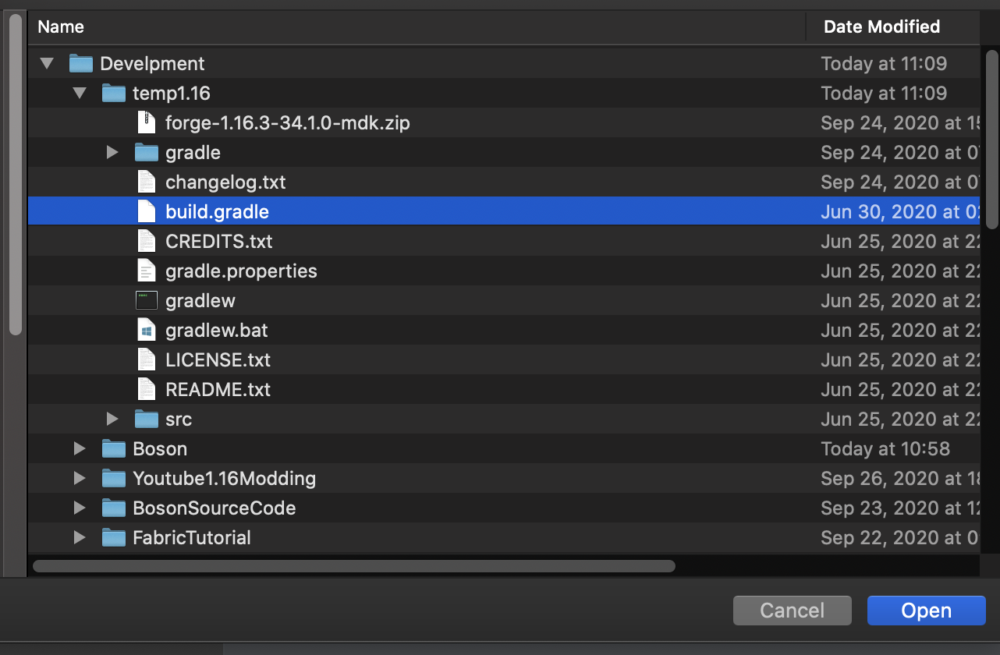
Select as `Open As Project'

Once opened, it will take longer or shorter to import, depending on your network and your own computer.
When the import is complete, click the build panel at the bottom, and the green tick on the left side indicates the import was successful.

Before proceeding to the next step, I recommend adjusting IntelliJ's settings for Gradle to speed up the game launch afterwards.
Open the IntelliJ settings interface, find the Gradle tab, change the Build and using from Gradle to IntelliJ IDEA, and click Apply to save.
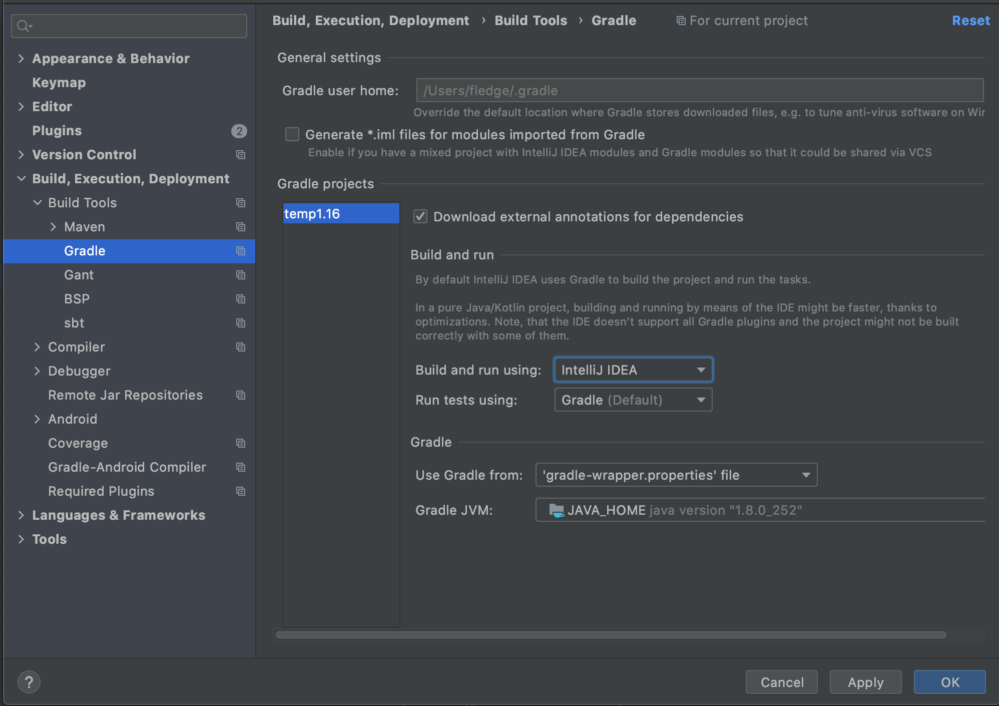
By default, MDK sets the logging level is debug level, the output of this logging level is too much, it is not convenient for us to view the logs in the development, it is recommended to adjust to info level.
Open your build.gradle file and change all property 'forge.logging.console.level', ‘debug’ to property 'forge.logging.console.level', ‘info’.
When you are done, click on the Gradle panel on the right side of the run, and select genIntelliJRuns under fg_runs in Tasks.

In this step, some of the remaining dependencies will be automatically downloaded, as well as Minecraft resource files. If you've launched the corresponding version of Minecraft with the official launcher before, this process will automatically copy the local cache, which will drastically reduce the download time. If you get an error during this process, basically just re-run genIntelliJRuns and it will fix it.
Similarly, when "Green Tick" is displayed on the left side, the configuration is successful.

Click Run=>Edit Configurations at the top.

Select the three items under Application and delete all tasks from Before Launch except Build.


Then select runClient to start the game.
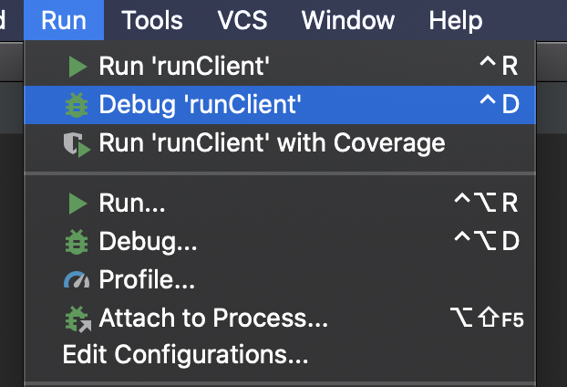
You can see that our game started successfully, and if you've followed the tutorial before and adjusted Gradle's settings, it shouldn't be very slow.

To make it easier to create directories and sub-packages later, unselect "Compose Package" and "Compress Empty Middleware" as shown below.
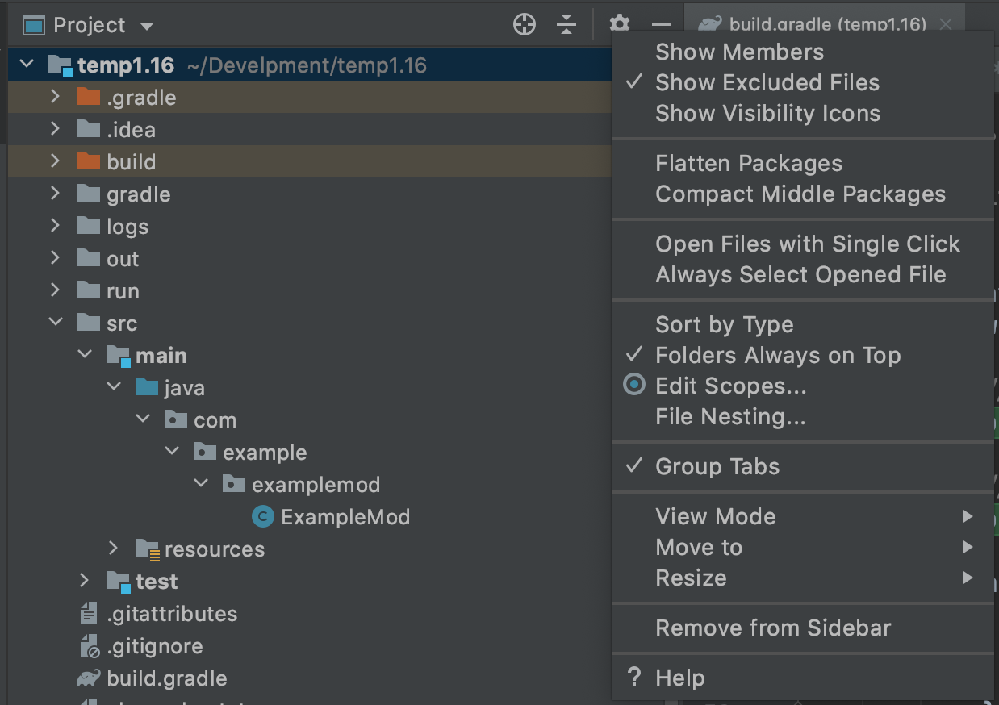
JDK Common Errors
If you have multiple JDKs on your computer, it's possible that the JDK automatically selected by IntelliJ is wrong, making it impossible to import, and you'll need to manually modify the project's JDK and the JDK needed to run Gradle.
Select Porject Strucutre under File.

Changing the project JDK to version 1.8

Introduce Environment
In this section, I'll describe the series of files and folders generated by Mod development, and what they do.
The first and most important file is build.gradle, which is the configuration file for Gradle. It specifies how the Mod project is built, what dependencies it has, and how it is configured.
One of the minecraft closures is about the configuration of Forge Gradle.
The mappings channel: 'snapshot', version: '20200514-1.16 configuration specifies the version of the mappings file to be used in this project, and I strongly recommend that you update the mappings file frequently. So what is a mappings file? Do you remember the srg name and mcp name that we mentioned before? The purpose of the mapping file is to provide a translation between srg name and mcp name.
channel means the category of the mapping file, and in most cases you should use snapshot to make sure your mcp name is up to date. In most cases, you should use snapshot (snapshot version) to make sure your mcp name is up to date, and then version is the specific version, in most cases a higher version of the game is compatible with a lower version of mapping, although the version number should not be too far off. There are also two other parameters that are commented out, which we'll leave aside for now.
Another thing you might use is dependencies configuration, if your mod needs to depend on another java library or another mod, you need to add content here, the specific way to add, the comments have already given a detailed example, so I won't say more here. The minecraft 'net.minecraftforge:forge:1.16.3-34.1.0' specifies the Forge version you need to use, if you want to upgrade the Forge version, you can modify the content of this line, the format of the version is net.minecraftforge:forge:game_version-forge_version.
The rest of the file is just like a normal build.gradle, if you want to know more about it, we recommend to learn Gradle.
The next folder is the src folder, this is where we put our code and resource files, the main folder is where we run the code and files, and the test folder is where we put the test code. The main folder is where we put our code, and the resources folder is where we put our material models and other mods, except for the code.
This is basically a standard .minecraft folder. It's worth noting that because the development environment has both Minecraft client and server code, they both share the run directory.
The rest of the build directory is worth mentioning. When you run the build task in the Gradle panel, your mods will be packed up and placed under build=>libs.
All remaining folders and files with gradle in them are required for Gradle to run and configure, please do not delete them.
Customize Mod Info
From this section on we'll be officially writing our mod!
Updating Mappings
**Forge's Mapping system is in the process of migration, the content of the mapping file will be updated when the MMS system is released, the version we are currently using is 20200916-1.16.2 **
We need change mappings channel: 'snapshot', version: '20200514-1.16’ in build.gradle to mappings channel: 'snapshot', version: '20200916-1.16.2’。
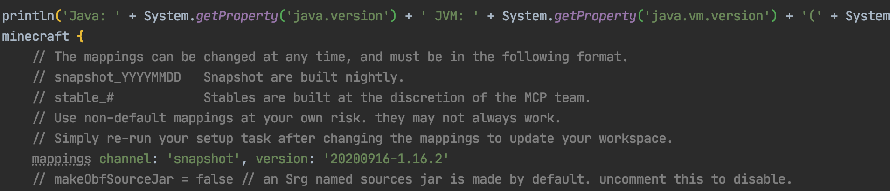
Then click the re-import button in the right Gradle panel to re-import the project, because the build.gradle file is very important, please be careful not to correct it.

This process may involve downloading files (but not a lot), there is a chance of errors, check your build.gradle for errors, and try a few times.
gradle.build
You also need to change these lines in build.gradle
version = '1.0'
group = 'com.yourname.modid'
archivesBaseName = 'modid'
To:
version = '1.0'
group = 'com.github.fledgexu.boson'
archivesBaseName = 'Boson'
The first line shoul be your mode’s version. The second should be your mods group name, if you don’t know how to naming it, please read this.
The last, archivesBaseName, should the Jar name of Your mod. In there, i put the “Boson”.
Configuration
First we select all the directories and files in the java folder and then right-click to delete the default classes under the Java package.

Then right-click again to create a new package
By default your package name should be the backwards spelling of your domain name, because I don't want to use my own domain name as an example, so here I'm filling in com.tutorial.boson.

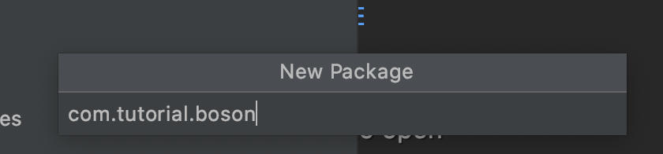
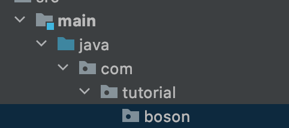
Right-click to create a Java class named Boson.

This Boson is the main class of our Mod.
Next, create a Utils class to hold some global constants.
The directory tree after creation is as follows.
java
└── com
└── tutorial
└── boson
├── Boson.java
└── Utils.java
Next let's go to the Utils class and define our modid, so what is your modId? modId is the unique identifier of your mod name, please note that modId and your mod name are not the same thing, it does not allow capital letters, nor spaces. The modId we've chosen here is boson.
public class Utils {
public static final String MOD_ID = "boson";
}
Then go to Boson and add a @Mod() comment to the top of the class name, add the modid we defined before. After that, we can add the following:
@Mod(Utils.MOD_ID)
public class Boson {
}
Next we need to modify mods.toml which is located under resources/META-INF. By default, IntelliJ does not syntactically highlight Toml files, so if you need syntax highlighting like I do, you can install the Toml plugin.
mods.toml is the configuration file for our mods, where we can modify the name, introduction, etc. of our mods. There are many configuration items, if a configuration item has #mandatory in the comment, it means it is required, if the injection is #optional, it means it is optional, you can add # in front of the configuration item to comment out the item.
Becasue the most readers of this verison of Boson are English speaker. You can understand comments. So just read the commnet to understand the function of configuration.
The rest are all dependencies, and Forge's official examples are clearly written, so we won't elaborate here.
The mods.toml I finished modifying is as follows:
modLoader="javafml"
loaderVersion="[34,)"
license="GNU GPLv3"
[[mods]]
modId="boson"
version="${file.jarVersion}"
displayName="Boson"
authors="FledgeShiu"
description='''
This is Boson, the 1.16 Modding tutorial example mod.
'''
Now that we've finished modding our mod info, let's open the game.

You can see that our Mod has appeared!
Item
First Item
From now on we will officially start writing code. First of all, a few things to say, the project's code will be open source, each section of the code links I will put at the back of the article, and for the sake of later amendments and easy to view.
First we have to be clear about which steps are required to create an item. The answer is three steps: create your own item and inherit the class from the original item, instantiate the item, and finally register the item into the game.
Note that these steps above are generic, and many custom content additions follow them.
Once we know the above steps, let's start adding our first item, where we'll add an Obsidian Ingot.
First we need to create an item class and have that class inherit the original Item class.
public class ObsidianIngot extends Item {
public ObsidianIngot() {
super(new Properties().group(ItemGroup.MATERIALS));
}
}
The code for this class is very simple, with only one constructor.
The only thing worth mentioning here is new Properties().group(ItemGroup.MATERIALS), this Properties specifies some properties of the item, such as: whether it is food or not, or which item bar the item is in in creation mode.
Here we have created a Properties and called the group method and passed in ItemGroup. MATERIALS. This adds the item to the original Miscellaneous creation mode item field, but you don't have to call the group method.
Next we need to instantiate and register the item, which used to be two separate steps, but Forge has added a mechanism called DeferredRegister, which makes it very easy to register an item.
public class ItemRegistry {
public static final DeferredRegister<Item> ITEMS = DeferredRegister.create(ForgeRegistries.ITEMS, Utils.MOD_ID);
public static final RegistryObject<Item> obsidianIngot = ITEMS.register("obsidian_ingot", ObsidianIngot::new);
}
That's all there is to register, first we create a variable of type DeferredRegister<Item> named ITEMS, which is a generic type indicating that the thing we need to register is the item, and then by new DeferredRegister<>(ForgeRegistries.ITEMS Utils.MOD_ID); instantiates this class, which has two arguments ForgeRegistries.ITEMS representing the item we want to register, and the second argument filled in should be your modId. We've created our registrar, and the next step is to register our item.
Remember what I said before? You need two things to register, one is the "register name", and the other is the instance of the object you want to register, the two arguments in ITEMS.register correspond to these two things.
public static final RegistryObject<Item> obsidianIngot = ITEMS.register("obsidian_ingot", ObsidianIngot::new);
The first argument is very easy to understand, obsidian_ingot corresponds to the registration name, please note that the registration name here also do not use capital letters, because the second argument here needs a type is a Supplier, here we put directly on the ObsidianIngot class of the method of construction of the method reference on, if you are not familiar with this syntax, please first at least understand the Java8 functional programming related to the content.
You see, even though we didn't declare the variables explicitly, we still instantiated the class of our item when we registered it.
There's one last step left and we're ready to add items successfully.
@Mod(Utils.MOD_ID)
public class Neutrino {
public Neutrino() {
ItemRegistry.ITEMS.register(FMLJavaModLoadingContext.get().getModEventBus());
}
}
We have added a line of code to the build method of the Mod main class, FMLJavaModLoadingContext.get().getModEventBus(); which means get Mod bus, if you don't know what Mod bus is please scroll ahead. And ITEMS.register(FMLJavaModLoadingContext.get().getModEventBus()); means to register ITEMS into Mod bus. Why register ITEMS into the Mod bus? The reason is that DeferredRegister is based on an event system implementation.
At this point, the code needed to add the items we want to add has been written, so open the game and take a look.


The item is still ugly, but that's our first item.
Model and Texture
In the previous section we have successfully added the first item, which was of course ugly, but in this section we will add models and materials to it.
First create a folder under resources in the following directory.
resources
├── META-INF
│ └── mods.toml
├── assets
│ └── boson
│ ├── models
│ │ └── item
│ └── textures
│ └── item
└── pack.mcmeta
In fact, assets is a resources package that belongs to a mod. For the specific directory structure, readers can look for the current game version of the material package tutorial to learn.
Next let's add the model file, first create a JSON file with the same registration name as the item you added in models in item, in our case obsidian_ingot.json.
It reads as follows:
{
"parent": "item/generated",
"textures": {
"layer0": "boson:item/obsidian_ingot"
}
}
It's pretty simple here: "parent": "item/generated" specifies what the parent of this model is, and "layer0": "boson:item/obsidian_ingot" specifies the specific textures. boson: means this is under our own assets file, and item/obsidian_ingot means it's the image textures/item/obsidian_ingot.png.
You can read the detailed format of the model file yourself Wiki
Next, we place our texture file under textures/item/obsidian_ingot.png, please note that the ratio of the texture file is 1:1, and preferably no larger than 32x32 pixels.

The loading flow here is: the game first gets the corresponding model file according to your registration name, then load the corresponding material file through the textures in the model file.
The completed directory tree is created as follows:
resources
├── META-INF
│ └── mods.toml
├── assets
│ └── boson
│ ├── models
│ │ └── item
│ │ └── obsidian_ingot.json
│ └── textures
│ └── item
│ └── obsidian_ingot.png
└── pack.mcmeta
After launching the game you'll see we have the model and material items.

Modding Crush Course
A handy tool for making models of things like Blocks and others: BlockBench.
Item and ItemStack
Here, I want to talk about the distinction between Item and ItemStack. Let's start with ItemStack and think step by step about why they need to be distinguished.
As the name implies, ItemStack is an Item Stack. In fact, in the game, all the items in the item slots are individual ItemStacks.

For example, in this case, there are three ItemStacks.
But this begs the question, although one set of apples is different in number from the second set, that number doesn't actually affect their actual performance. They can also be eaten, and the effect of the reply is the same when eaten.
These are the same as Properties or Default Behavior, and the same logic should be extracted from them, which is called Item.
Again, there are only two kinds of Items here: apples and iron swords.
You can imagine that ItemStack is a wrapper for Item, which provides additional attributes such as quantity, NBT tags, etc.
It's worth noting here that just because ItemStack is zero, it doesn't mean it's null, so you have to use the isEmpty() method under ItemStack to determine if it's null.
ItemStack contains Item is actually the same instance, the reason is very simple, if it is not the same instance, it will pointlessly produce many of the same instance, for optimization purposes, of course, is appropriate to share an instance, which also means that you can useresult.getItem() == Items to detect which Item is stored in ItemStack.
Item Group
In this section, we'll look at how to create a creative tab of your own, very simply.
First create a class, let it inherit ItemGroup, ItemGroup on behalf of the creative bar, because we need to create a creative bar, naturally need to inherit it.
It reads as follows:
public class ObsidianGroup extends ItemGroup {
public ObsidianGroup() {
super("obsidian_group");
}
@Override
public ItemStack createIcon() {
return new ItemStack(ItemRegistry.obsidianIngot.get());
}
}
The first method is used to set the title name of the creative bar, and the second provides the icon for the creative bar. Here we have used Obsidian Ingot as the icon, please note that the return value type of this function is ItemStack, not Item.
Then we need to instantiate the class and create ModGroup.
public class ModGroup {
public static final ItemGroup itemGroup = new ObsidianGroup();
}
This is where we store instances of ItemGroup and its subclasses (such as ObsidianGroup, which we created earlier). Each instance here represents a creative bar in the game.
It's also very easy to call the creative tab after you've created it, let's take Obsidian Ingot for example.
public class ObsidianIngot extends Item {
public ObsidianIngot() {
super(new Properties().group(ModGroup.itemGroup));
}
}
At this point open the game our Obsidian Ingot should be in the designated creative tab .

Food
In this section we will add a new food to the Minecraft world: the Obsidian Apple, after eating this apple you can reply to hunger, but it will be poisoned. Contrary to what many people think, food is not a separate thing, it's just a special item for Minecraft.
Again, let's create a class that inherits Item.
public class ObsidianApple extends Item {
private static final Food food = (new Food.Builder())
.saturation(10)
.hunger(20)
.effect(() -> new EffectInstance(Effects.POISON, 3 * 20, 1), 1)
.build();
public ObsidianApple() {
super(new Properties().food(food).group(ItemGroup.FOOD));
}
}
We explain one line by one line.
We created a variable of type Food, which specifies some properties of this food, such as: saturation method sets the satiety level, hunger sets the hunger level to be restored, and effect method sets the potion effect that the food may have when eaten .Here we set the effect to Poisoning, with a duration of 60 ticks and potion level 1. The second parameter represents the likelihood of the effect triggering (think of the original raw chicken), here we set it to 1 for 100%.
Next up is the construction method, which I'm sure you're already familiar with.The only thing new is the .food(food) method, which indicates that the item is a food, and we ended up putting the item in the food creative tab.
Then we register our food under the name obsidian_apple:
public class ItemRegistry {
public static final DeferredRegister<Item> ITEMS = DeferredRegister.create(ForgeRegistries.ITEMS, Utils.MOD_ID);
public static final RegistryObject<Item> obsidianApple = ITEMS.register("obsidian_apple", ObsidianApple::new);
}
Then add the model obsdian_ingot.json:
{
"parent": "item/generated",
"textures": {
"layer0": "boson:item/obsidian_apple"
}
}
Then the textures obsidian_apple.png.

Take out your apples and try to eat them.

Sword
In this section, we'll explain how to create a new sword, and here we'll use the Obsidian Sword as an example.
First we have to create an ItemTier. The ItemTier is what we call tool levels, such as Diamond Level, Iron Level .
public enum ModItemTier implements IItemTier {
OBSIDIAN(3, 2000, 10.0F, 4.0F, 30, () -> {
return Ingredient.fromItems(ItemRegistry.obsidianIngot.get());
});
private final int harvestLevel;
private final int maxUses;
private final float efficiency;
private final float attackDamage;
private final int enchantability;
private final LazyValue<Ingredient> repairMaterial;
ModItemTier(int harvestLevelIn, int maxUsesIn, float efficiencyIn, float attackDamageIn, int enchantabilityIn, Supplier<Ingredient> repairMaterialIn) {
this.harvestLevel = harvestLevelIn;
this.maxUses = maxUsesIn;
this.efficiency = efficiencyIn;
this.attackDamage = attackDamageIn;
this.enchantability = enchantabilityIn;
this.repairMaterial = new LazyValue<>(repairMaterialIn);
}
@Override
public int getMaxUses() {
return this.maxUses;
}
@Override
public float getEfficiency() {
return this.efficiency;
}
@Override
public float getAttackDamage() {
return this.attackDamage;
}
@Override
public int getHarvestLevel() {
return this.harvestLevel;
}
@Override
public int getEnchantability() {
return this.enchantability;
}
@Override
public Ingredient getRepairMaterial() {
return this.repairMaterial.getValue();
}
}
Again, this may seem like an awful lot of content, but it's not as complicated as you might think.
Here we create a ModItemTier class and inherit the IItemTier interface, the reason is that the original net.minecraft.item.ItemTier is implemented in enum, we can't add anything to it ourselves, so we have to implement it ourselves, we basically just copy it here. The original implementation, with all the properties of the original, is also in this class, so you can refer to it.
As for the various methods in this enum, I'm not going to explain them here, but with the experience of several previous items, I'm sure the reader reading this will have the ability to guess the function's function by its name.
Similarly, we create an ObsidianSword, but this time the inheritance class is a little different, this time we directly inherit the original SwordItem class, if you look at the inheritance diagram, you can see that SwordItem is a subclass of Item.

Implementation:
public class ObsidianSword extends SwordItem {
public ObsidianSword() {
super(ModItemTier.OBSIDIAN, 3, -2.4F, new Item.Properties().group(ItemGroup.COMBAT));
}
}
Please also refer to the original implementation here for 3 and -2.4F, where all item registrations are in net.minecraft.item.Items.
Then register the item.
public static RegistryObject<Item> obsidianSword = ITEMS.register("obsidian_sword", ObsidianSword::new);
Adding model files.
{
"parent": "item/generated",
"textures": {
"layer0": "boson:item/obsidian_sword"
}
}
and textures:

Once you're done creating it, open the game and see.
Tools
In this section, we'll learn how to add a new tool, and here's an example of a new pickaxe.
Let us first observe the inheritance tree.

You can see that the original version has provided classes corresponding to 4 tools, and there is a ToolItem on top of these tools. If you want to create a new type of tool, you can choose to inherit and implement this class. Please refer to the original version for the implementation method 4 categories.
Next we begin to create the obsidian pickaxe
public class ObsidianPickaxe extends PickaxeItem {
public ObsidianPickaxe() {
super(ModItemTier.OBSIDIAN, 2, -3f, (new Item.Properties()).group(ModGroup.itemGroup));
}
}
As you can see, here we choose to directly inherit the PickaxeItem class, and then pass directly we create a good obsidian ItemTier, the rest of the parameters, please refer to the original implementation.
And then there's registration.
public static final RegistryObject<Item> obsidianPickaxe = ITEMS.register("obsidian_pickaxe", ObsidianPickaxe::new);
Adding textures and models is not something I'll go into here.
Open up the game and take a look, and you should be able to see the brand new Obsidian pickaxe.

Armor
In this section, we'll come to learn how to add a set of Armor, and here we'll use Obsidian Armor as an example.
As with tools and weapons, equipment has its own class, IArmorMaterial, and here we'll follow the original version and implement this interface with an Enum.
public enum ModArmorMaterial implements IArmorMaterial {
OBSIDIAN("obsidian", 40, new int[]{5, 8, 10, 5}, 20, SoundEvents.ITEM_ARMOR_EQUIP_DIAMOND, 2.0F, 0.0F, () -> {
return Ingredient.fromItems(ItemRegistry.obsidianIngot.get());
});
private static final int[] MAX_DAMAGE_ARRAY = new int[]{13, 15, 16, 11};
private final String name;
private final int maxDamageFactor;
private final int[] damageReductionAmountArray;
private final int enchantability;
private final SoundEvent soundEvent;
private final float toughness;
private final float knockbackResistance;
private final LazyValue<Ingredient> repairMaterial;
ModArmorMaterial(String name, int maxDamageFactor, int[] damageReductionAmountArray, int enchantability, SoundEvent soundEvent, float toughness, float knockbackResistance, Supplier<Ingredient> repairMaterial) {
this.name = name;
this.maxDamageFactor = maxDamageFactor;
this.damageReductionAmountArray = damageReductionAmountArray;
this.enchantability = enchantability;
this.soundEvent = soundEvent;
this.toughness = toughness;
this.knockbackResistance = knockbackResistance;
this.repairMaterial = new LazyValue<>(repairMaterial);
}
public int getDurability(EquipmentSlotType slotIn) {
return MAX_DAMAGE_ARRAY[slotIn.getIndex()] * this.maxDamageFactor;
}
public int getDamageReductionAmount(EquipmentSlotType slotIn) {
return this.damageReductionAmountArray[slotIn.getIndex()];
}
public int getEnchantability() {
return this.enchantability;
}
public SoundEvent getSoundEvent() {
return this.soundEvent;
}
public Ingredient getRepairMaterial() {
return this.repairMaterial.getValue();
}
@OnlyIn(Dist.CLIENT)
public String getName() {
return this.name;
}
public float getToughness() {
return this.toughness;
}
public float getKnockbackResistance() {
return this.knockbackResistance;
}
}
Note the name here, which relates to the textures we'll be creating the player to wear on his body.
public static final RegistryObject<Item> obsidianHelmet = ITEMS.register("obsidian_helmet", () -> new ArmorItem(ModArmorMaterial.OBSIDIAN, EquipmentSlotType.HEAD, (new Item.Properties()).group(ModGroup.itemGroup)));
public static final RegistryObject<Item> obsidianChestplate = ITEMS.register("obsidian_chestplate", () -> new ArmorItem(ModArmorMaterial.OBSIDIAN, EquipmentSlotType.CHEST, (new Item.Properties()).group(ModGroup.itemGroup)));
public static final RegistryObject<Item> obsidianLeggings = ITEMS.register("obsidian_leggings", () -> new ArmorItem(ModArmorMaterial.OBSIDIAN, EquipmentSlotType.LEGS, (new Item.Properties()).group(ModGroup.itemGroup)));
public static final RegistryObject<Item> obsidianBoots = ITEMS.register("obsidian_boots", () -> new ArmorItem(ModArmorMaterial.OBSIDIAN, EquipmentSlotType.FEET, (new Item.Properties()).group(ModGroup.itemGroup)));
You can see that the first parameter of ArmorItem specifies the class corresponding to the armor, and the second parameter specifies the position where the armor is worn.
The next step is the addition of materials and textures for the items, which I won't explain here.
But armor has an extra wearable textures compared to other items, which needs to be added, because Minecraft hard codes all wearable armor textures under the minecraft domain, so we have to create the corresponding directory, which will look like this when it's finished.
resources
├── META-INF
│ └── mods.toml
├── assets
│ ├── boson
│ └── minecraft
│ └── textures
│ └── models
│ └── armor
└── pack.mcmeta
As you can see, we've created minecraft and a corresponding folder for armor materials in the same folder as boson.
接下来我们得放入我们盔甲的材质。材质有两张，命名格式为：盔甲材料_layer_1和盔甲材料_layer_2。在我们这里就是obsidian_layer_1和obsidian_layer_2。
Next we have to put in our armor material. There are two materials, named in the format armro-texture_layer_1 and armro-texture_layer_2. In our case it's obsidian_layer_1 and obsidian_layer_2.


Note that the two textures contain a set of armor.
The directory after the textures is put in is as follows.
resources
├── META-INF
│ └── mods.toml
├── assets
│ ├── boson
│ └── minecraft
│ └── textures
│ └── models
│ └── armor
│ ├── obsidian_layer_1.png
│ └── obsidian_layer_2.png
└── pack.mcmeta
Open the game and you should see a brand new suit of armor.

Item Property Override
Item Property Override is a mechanism of the original Minecraft, used to achieve, for example, the bow and arrow display different bow models according to different draw times. We use the model file of the original bow.json to explain what is item attribute coverage. For more information, please refer to the original Item models ’s overrides.
bow.json
{
……Omit……
"overrides": [
{
"predicate": {
"pulling": 1
},
"model": "item/bow_pulling_0"
},
{
"predicate": {
"pulling": 1,
"pull": 0.65
},
"model": "item/bow_pulling_1"
},
{
"predicate": {
"pulling": 1,
"pull": 0.9
},
"model": "item/bow_pulling_2"
}
]
}
You can see that a configuration element called overrides appeared in bower.json, and a pair of pairs appeared in this configuration element:
{
"predicate": {
"pulling": 1
},
"model": "item/bow_pulling_0"
}
The content here is very easy to understand. The predicate is the "condition". When the value of predicate (defined in the game will dynamically change) in the condition is greater than or equal to 1, load the corresponding model, which is item/bow_pulling_0.
And we are also about to implement a similar function, in this section we are going to implement a "magic ingot" that dynamically changes the model according to the number of stacked items.
The first is the items, which is very simple.
public class MagicIngot extends Item {
public MagicIngot() {
super(new Properties().group(ModGroup.itemGroup));
}
}
Registered items:
public static final RegistryObject<Item> magicIngot = ITEMS.register("magic_ingot", MagicIngot::new);
The next step is to add "Item Property Override" to the item we created.
@Mod.EventBusSubscriber(bus = Mod.EventBusSubscriber.Bus.MOD, value = Dist.CLIENT)
public class PropertyRegistry {
@SubscribeEvent
public static void propertyOverrideRegistry(FMLClientSetupEvent event) {
event.enqueueWork(() -> {
ItemModelsProperties.registerProperty(ItemRegistry.magicIngot.get(), new ResourceLocation(Utils.MOD_ID, "size"), (itemStack, clientWorld, livingEntity) -> itemStack.getCount());
});
}
}
As you can see, in the FMLClientSetupEvent event, we called the ItemModelsProperties.registerProperty method to add an overrides to our item. The meaning of the three parameters here is that the first one is the one you want to add overrides Item, the second is the name of this overrides, which is the name you will write in the predicate of the model file later, and the third is the dynamically changing value. Here we directly call itemStack.getCount( )The function returns the number of stacked items.
Next look at our model file: magic_ingot.json:
{
"parent": "item/generated",
"textures": {
"layer0": "item/iron_ingot"
},
"overrides": [
{
"predicate": {
"boson:size": 16
},
"model": "item/gold_ingot"
}
]
}
You can see here that we have set it to display the texture of the iron ingot by default, and then display the texture of the gold ingot when the number of items is greater than or equal to 16.
You can see this "magic ingot" when you open the game.

Localization
In this section, we will learn how to add names to our items.
In the previous chapters, the names of the items we created looked like a string of meaningless characters. In this section we will add a meaningful name to them.
In Minecraft, the name of the file is provided in the form of a language file. In the higher version, the language file is a json file. Its approximate content is as follows:
{
"language.name": "English",
"language.region": "United States",
"language.code": "en_us",
"narrator.button.accessibility": "Accessibility",
"narrator.button.language": "Language"
}
You can see that a language file is actually a "key-value pair", where the "key" is an in-game number, and the "value" is the specific translation. The reason for this is that Minecraft has to support languages of many countries and regions. If each language is directly hardcoded into the game, it is obviously not maintainable. By default, if you do not add a corresponding translation to the object that needs to be translated in the game, then it will display the "key" of this translation by default.
Take our Obsidian Ingot for example:

We haven't added a name to it yet. The item.neutrino.obsidian_ingot it displays is the default key value. Of course, you can also customize the key value. There are corresponding methods in the Item class to achieve this. As I said before, in the Minecraft source code and the function name guessing function is a necessary ability for Mod development, so here It is equivalent to a small test, please find a way to modify this key by yourself.
But in some cases, the game cannot automatically add keys to my content by default. At this time, we have to create a key by ourselves. Minecraft provides a method called I18n.format for me to create it by myself. For the specific usage, we I will talk about it later.
Let me create the language file.
First, create a folder called lang under the boson folder. After the creation is successful, the directory tree is as follows:
resources
├── META-INF
│ └── mods.toml
├── assets
│ └── boson
│ ├── lang
│ ├── models
│ │ └── item
│ │ ├── obsidian_apple.json
│ │ ├── obsidian_ingot.json
│ │ └── obsidian_sword.json
│ └── textures
│ └── item
│ ├── obsidian_apple.png
│ ├── obsidian_ingot.png
│ └── obsidian_sword.png
└── pack.mcmeta
Here we take English as an example.
First create a file called en_us with the following content.
{
"item.neutrino.obsidian_ingot": "Obsidian Ingot",
"item.neutrino.obsidian_apple":"Obsidian Apple",
"item.neutrino.obsidian_sword":"Obsidian Sword",
"itemGroup.obsidian_group": "Obsidian Tab"
}
Then start the game, adjust to simplified Chinese, you should be able to see our items are translated.

A list of all available language files can be found in the Wiki’s Language#Available languages.
Block
First Block
In this section, we will create the simplest block, a block with no functions, even models and textures. Before I start, I must make a conceptual distinction, about the conceptual distinction between objects and squares. Anything you can hold in your hand is an "item", and it becomes a "block" only when it is placed in the world.

This is an item

This is a block.
Okay, we have made the difference between items and blocks clear. Next, let's create the first block, here we take the obsidian block as an example.
First create a class called ObsidianBlock, just like all custom items need to inherit the Item class, all custom methods need to inherit the Block class, please make sure your Block class is net. Minecraft.block.Block this class.
The specific content is as follows:
public class ObsidianBlock extends Block {
public ObsidianBlock() {
super(Properties.create(Material.ROCK).hardnessAndResistance(5));
}
}
The content is very simple. Just like Item has Properties, the block also needs a Properties. Unlike the item's Properties, the block's Propeteis needs to be created by calling the create method. Please note that although the two Properties have the same name, they are not in the same package. These are actually two different classes. The create method requires a parameter, which is a Material , Material Help you preset some characteristics of the block, such as whether it is solid, whether it is fluid, etc. You can override the features brought by Material by calling the method of Properties, here we use the original version of Material.ROCK, if you want to create a Material by yourself is very simple, please refer to the original implementation. Finally we call the hardnessAndResistance method to set the hardness for my block.
So far our obsidian block class has been created. Just as items need to be registered, my cubes also need to be registered.
Create a new registration class BlockRegistry with the following content:
public class BlockRegistry {
public static final DeferredRegister<Block> BLOCKS = DeferredRegister.create(ForgeRegistries.BLOCKS, Utils.MOD_ID);
public static final RegistryObject<Block> obsidianBlock = BLOCKS.register("obsidian_block", ObsidianBlock::new);
}
I believe you who have written the registration class before should be relatively familiar with these contents. We replaced DeferredRegister<Item> with DeferredRegister<Block> (of course, the following instantiation parameters also need to be modified), so that we create a block register. The registration method is the same as the item registration, so I won't elaborate on it here.
You also need to register this register to the mod bus in your main class constructor.
@Mod(Utils.MOD_ID)
public class Neutrino {
public Neutrino() {
ItemRegistry.ITEMS.register(FMLJavaModLoadingContext.get().getModEventBus());
BlockRegistry.BLOCKS.register(FMLJavaModLoadingContext.get().getModEventBus());
}
}
At this point, we have completed our block, now start the game, enter the following commands, and you can place your own squares.
/setblock ~ ~ ~ <ModID>:<Block Registry Name>
As our example
/setblock ~ ~ ~ neutriono:obsidian_block
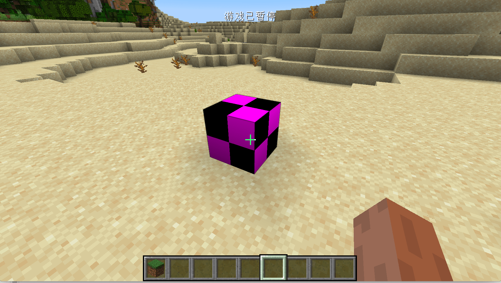
However, the blocks that can only be placed by commands are obviously not in our appetite. We hope that there is an item that can correspond to the blocks, so that we don’t need to use commands to place the blocks. For this common demand, Minecraft also provides a convenience To meet the requirements, this class is BlockItem, we only need to create and instantiate this class.
Let's go back to our ItemRegistry and add the following line
public static final RegistryObject<Item> obsidianBlock = ITEMS.register("obsidian_block", () -> new BlockItem(BlockRegistry.obsidianBlock.get(), new Item.Properties().group(ModGroup.itemGroup)));
You can see that we have created an instance of BlockItem. Its construction method requires two parameters. The first parameter is the instance of the block you registered. We can get the registered one through BlockRegistry.obsidianBlock.get() Block instance, the second parameter is the Properties of an Item. The Properties here is very simple. We will add it to the creative inventory we created earlier.
Open the game at this time, and you can see our cubes in our creative mode inventory.
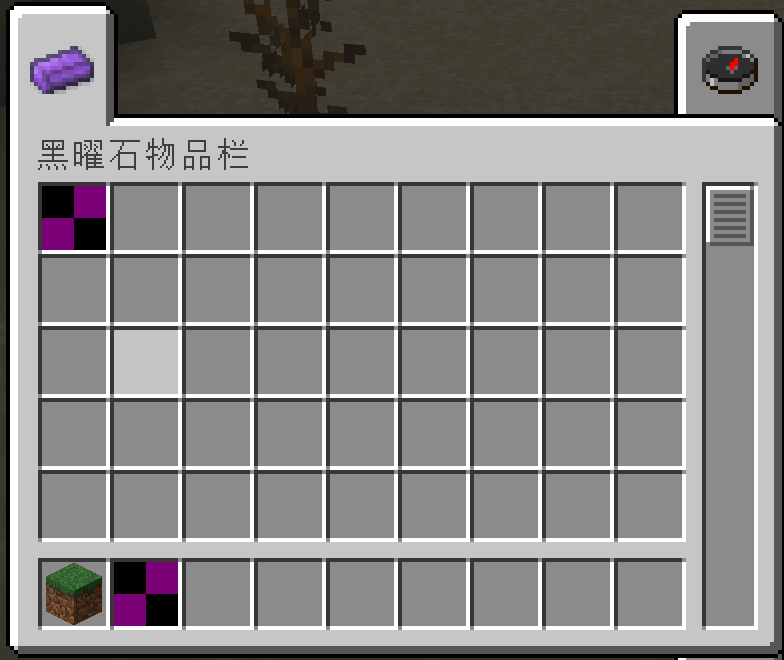

Block and BlockState
Before starting our next explanation, I want to talk about the concept of BlockState. I believe you have already learned about ItemStack, and you should be able to understand this concept quickly.
Just as all the items in the game are actually Itemstack, all the blocks in the game are actually BlockState, and compared to Block, besides the extra XYZ position information, the most important thing is It is the state information, which is the state information. State information is difficult to understand at first glance, but it is actually very easy to understand. Let’s take the original fence as an example. When you put the original fence on the ground, the fence will automatically change its shape according to the surrounding squares. This is actually the fence automatically changed its state. We can check the state of the square in F3 debugging mode. .

This is the fence model in the default block state.

It can be seen that after we used the Debug Stick to modify the block state of the fence, the block model has also changed accordingly.
Of course, not all blocks have state attributes, such as stones do not, but position attributes are unique to every block.
Block's Model and Texture
We have successfully created a Block, but this Block is still ugly, just a black and purple block. In this section, we are going to add models and textures to this block.
First, we create some folders, and the created directories are displayed as follows:
resources
├── META-INF
│ └── mods.toml
├── assets
│ └── boson
│ ├── blockstates
│ ├── lang
│ ├── models
│ │ ├── block
│ │ └── item
│ └── textures
│ ├── block
│ └── item
└── pack.mcmeta
Then we create a json file with the same name as the registered name of your item under the blockstates folder, here we are going to create obsidian_block.json
The content is as follows:
{
"variants": {
"": { "model": "boson:block/obsidian_block_model" }
}
}
This file is actually a mapping table of the blockstate and the specific model to be used. If you are still not sure what the blockstate is, please read it forward.
Here we have no blockstate, so we wrote "": {"model": "boson:block/obsidian_block_model" }, setting the default model to obsidian_block_model.json.
Next we create obsidian_block_model.json under models/block with the following content:
{
"parent": "block/cube_all",
"textures": {
"all": "boson:block/obsidian_block_texture"
}
}
As you can see, compared with the item model, the inherited stuff is different. As for the format of the specific model file, please refer to Wiki. In the model, we called obsidian_block_texture.png as our material.
Next, let's add our material under textures/block, also please note that the ratio of the material file is 1:1, and it is best not to be larger than 32x32 pixels.
Start the game at this time, and you should be able to see that our blocks have corresponding textures and models.
**The whole loading process is: get the state of the block in the game, get the model in the mapping table corresponding to Blockstates, and load the material according to the model. **
But at this time you will find that the item corresponding to our block does not have a texture yet, and we will solve this problem next.
Create a json file with the same name as our BlockItem registered name under models/item, here is obsidian_block.json
{
"parent": "boson:block/obsidian_block_model"
}
Yes, you read that right, just one sentence, we can directly inherit the corresponding block model.
Block with Blockstates
We have mentioned BlockState a bit before, but our first block is obviously stateless. In this section, we will use the obsidian cube as an example to create a block with state.
First create a class called ObsidianRubikCube with the following content:
public class ObsidianRubikCube extends Block {
private static IntegerProperty STATE = IntegerProperty.create("face", 0, 1);
public ObsidianRubikCube() {
super(Properties.create(Material.ROCK).hardnessAndResistance(5));
this.setDefaultState(this.stateContainer.getBaseState().with(STATE, 1));
}
@Override
protected void fillStateContainer(StateContainer.Builder<Block, BlockState> builder) {
builder.add(STATE);
super.fillStateContainer(builder);
}
}
There are three things that are different from the box I created before. The first is:
private static IntegerProperty STATE = IntegerProperty.create("face", 0, 1);
In this sentence, we created a new block state. As the name IntegerProperty implies, this is an integer type block state. In addition to the original version of IntegerProperty, it also implements BooleanProperty and EnumProperty, And the original version also implements many preset block states under the BlockStateProperties class, which can be used on demand. If these types do not meet your needs, you can also inherit Property to create a new type of block state yourself.
IntegerProperty.create("face", 0, 1)
Means, the name of this block state is face, the minimum value is 0, and the maximum value is 1.
@Override
protected void fillStateContainer(StateContainer.Builder<Block, BlockState> builder) {
builder.add(STATE);
super.fillStateContainer(builder);
}
hen we call the add method in the passed in builder variable in fillStateContainer to add a state to our block.
Finally, we set the default state in the constructor (you don’t have to set it).
this.setDefaultState(this.stateContainer.getBaseState().with(STATE, 1));
Register Block
public static final RegistryObject<Block> obsidianRubikCube = BLOCKS.register("obsidian_rubik_cube", ObsidianRubikCube::new);
Register items
public static final RegistryObject<Item> obsidianRubikCube = ITEMS.register("obsidian_rubik_cube", () -> new BlockItem(BlockRegistry.obsidianRubikCube.get(), new Item.Properties().group(ModGroup.itemGroup)));
Next, create a json file with the same name as your block's registered name in the blockstates folder. We create obsidian_rubik_cube.json with the following content:
{
"variants": {
"face=0": { "model": "boson:block/obsidian_rubik_cube_model_0" },
"face=1": { "model": "boson:block/obsidian_rubik_cube_model_1" }
}
}
As you can see, we have specified different models for different face values here, namely obsidian_rubik_cube_model_0 and obsidian_rubik_cube_model_1. Please note that if you want to define multiple blockstate values, please separate them with commas without any spaces. For specific requirements, please refer to the chapter on model in the Wiki.
Then we create two model files obsidian_rubik_cube_model_0.json and obsidian_rubik_cube_model_1.json under models/block.
obsidian_rubik_cube_model_0.json:
{
"parent": "block/cube_all",
"textures": {
"all": "boson:block/obsidian_rubik_cube_texture_0"
}
}
obsidian_rubik_cube_model_1.json:
{
"parent": "block/cube_all",
"textures": {
"all": "boson:block/obsidian_rubik_cube_texture_1"
}
}
You can see that it loads two different textures.
Then add the textures.
obsidian_rubik_cube_texture_0.png
obsidian_rubik_cube_texture_1.png
Finally, add content to our item model obsidian_rubik_cube:
{
"parent": "boson:block/obsidian_rubik_cube_model_1"
}
可以看到，随着我们用debug stick改变了方块的状态，方块的模型和材质也发生了改变。
Not Solid Block and custom model
In this section, we will create a transparent block with a special shape. Here we take the obsidian frame as an example.
First we create a class called ObsidianFrame with the following content:
public class ObsidianFrame extends Block implements IWaterLoggable {
private static final VoxelShape shape;
private static final BooleanProperty WATERLOGGED = BooleanProperty.create("waterlogged");
static {
VoxelShape base = Block.makeCuboidShape(0, 0, 0, 16, 1, 16);
VoxelShape column1 = Block.makeCuboidShape(0, 1, 0, 1, 15, 1);
VoxelShape column2 = Block.makeCuboidShape(15, 1, 0, 16, 15, 1);
VoxelShape column3 = Block.makeCuboidShape(0, 1, 15, 1, 15, 16);
VoxelShape column4 = Block.makeCuboidShape(15, 1, 15, 16, 15, 16);
VoxelShape top = Block.makeCuboidShape(0, 15, 0, 16, 16, 16);
shape = VoxelShapes.or(base, column1, column2, column3, column4, top);
}
public ObsidianFrame() {
super(Properties.create(Material.ROCK).hardnessAndResistance(5).notSolid());
this.setDefaultState(this.stateContainer.getBaseState().with(WATERLOGGED, false));
}
@Override
protected void fillStateContainer(StateContainer.Builder<Block, BlockState> builder) {
builder.add(WATERLOGGED);
super.fillStateContainer(builder);
}
@Override
public VoxelShape getShape(BlockState state, IBlockReader worldIn, BlockPos pos, ISelectionContext context) {
return shape;
}
@Nullable
@Override
public BlockState getStateForPlacement(BlockItemUseContext context) {
BlockPos blockpos = context.getPos();
BlockState blockstate = context.getWorld().getBlockState(blockpos);
if (blockstate.isIn(this)) {
return blockstate.with(WATERLOGGED, Boolean.valueOf(false));
} else {
FluidState fluidstate = context.getWorld().getFluidState(blockpos);
BlockState blockstate1 = this.getDefaultState().with(WATERLOGGED, Boolean.valueOf(fluidstate.getFluid() == Fluids.WATER));
return blockstate1;
}
}
public BlockState updatePostPlacement(BlockState stateIn, Direction facing, BlockState facingState, IWorld worldIn, BlockPos currentPos, BlockPos facingPos) {
if (stateIn.get(WATERLOGGED)) {
worldIn.getPendingFluidTicks().scheduleTick(currentPos, Fluids.WATER, Fluids.WATER.getTickRate(worldIn));
}
return super.updatePostPlacement(stateIn, facing, facingState, worldIn, currentPos, facingPos);
}
@Override
public FluidState getFluidState(BlockState state) {
return state.get(WATERLOGGED) ? Fluids.WATER.getStillFluidState(false) : super.getFluidState(state);
}
}
At the top we created a VoxelShape, we will return this shape in the getShape method. This VoxelShape is the collision box of our block. Unfortunately, the collision box of Minecraft can only be composed of blocks. The size of this box is 16*16*16, so we created a series of cuboids and cubes by ourselves in the static code block to form the collision box of our block. The 6 parameters of Block.makeCuboidShape are respectively Is the XYZ of the starting point and the XYZ of the ending point. Finally, we put these things together using the or method of VoxelShapes. There are many useful space operation methods under VoxelShapes, please choose by yourself. If you don't set a suitable collision box for your block, the space inside your block will appear very dark.
It can be seen that the most special thing here is that the notSoild method is called. This method is to inform Minecraft that our block is not a "solid" block and needs special treatment. The reason for this is that there are so many blocks in the world of Minecraft. If every face of the block has to be rendered, including those that are occluded and blocks that are blocked, it will cost a lot of performance, so for optimization Considering that, Minecraft will only render those surfaces that are not blocked. The role of noSoild is to tell Minecraft to render the faces that are blocked by this block.
If this is not turned on, this effect will appear.

If you are interested in Minecraft block rendering-related content, you can read this blog article and other articles under this blog.
After 1.13, Minecraft added the “water logged" feature. Many of the original incomplete blocks have this feature, and we can also add this feature to our blocks.
First, you need to make your block implement the interface IWaterLoggable:
public class ObsidianFrame extends Block implements IWaterLoggable
Next you have to add a Boolean BlockState called waterlogged to your block.
private static final BooleanProperty WATERLOGGED = BooleanProperty.create("waterlogged");
public ObsidianFrame() {
super(Properties.create(Material.ROCK).hardnessAndResistance(5).notSolid());
this.setDefaultState(this.stateContainer.getBaseState().with(WATERLOGGED, false));
}
@Override
protected void fillStateContainer(StateContainer.Builder<Block, BlockState> builder) {
builder.add(WATERLOGGED);
super.fillStateContainer(builder);
}
Next, implement the following block, the code is copied from the original half brick.
@Nullable
@Override
public BlockState getStateForPlacement(BlockItemUseContext context) {
BlockPos blockpos = context.getPos();
BlockState blockstate = context.getWorld().getBlockState(blockpos);
if (blockstate.isIn(this)) {
return blockstate.with(WATERLOGGED, Boolean.valueOf(false));
} else {
FluidState fluidstate = context.getWorld().getFluidState(blockpos);
BlockState blockstate1 = this.getDefaultState().with(WATERLOGGED, Boolean.valueOf(fluidstate.getFluid() == Fluids.WATER));
return blockstate1;
}
}
public BlockState updatePostPlacement(BlockState stateIn, Direction facing, BlockState facingState, IWorld worldIn, BlockPos currentPos, BlockPos facingPos) {
if (stateIn.get(WATERLOGGED)) {
worldIn.getPendingFluidTicks().scheduleTick(currentPos, Fluids.WATER, Fluids.WATER.getTickRate(worldIn));
}
return super.updatePostPlacement(stateIn, facing, facingState, worldIn, currentPos, facingPos);
}
@Override
public FluidState getFluidState(BlockState state) {
return state.get(WATERLOGGED) ? Fluids.WATER.getStillFluidState(false) : super.getFluidState(state);
}
But overall, the current design of the water logged block is more like a hack, so these implementations are a bit inexplicable...
Register Block:
public static final RegistryObject<Block> obsidianFrame = BLOCKS.register("obsidian_frame", ObsidianFrame::new);
Register Item:
public static RegistryObject<Item> obsidianFrame = ITEMS.register("obsidian_frame", () -> new BlockItem(BlockRegistry.obsidianFrame.get(), new Item.Properties().group(ModGroup.itemGroup)));
Then there is the blockstate file obsidian_frame.json:
{
"variants": {
"": { "model": "bosons:block/obsidian_frame" }
}
}
Model file obsidian_frame.json:
{
"texture_size": [64, 64],
"textures": {
"0": "boson:block/obsidian_frame",
"particle": "boson:block/obsidian_frame"
},
"elements": [
{
"from": [0, 0, 0],
"to": [16, 1, 16],
"faces": {
"north": {"uv": [4, 8.25, 8, 8.5], "texture": "#0"},
"east": {"uv": [0, 8.25, 4, 8.5], "texture": "#0"},
"south": {"uv": [12, 8.25, 16, 8.5], "texture": "#0"},
"west": {"uv": [8, 8.25, 12, 8.5], "texture": "#0"},
"up": {"uv": [8, 8.25, 4, 4.25], "texture": "#0"},
"down": {"uv": [12, 4.25, 8, 8.25], "texture": "#0"}
}
},
{
"from": [0, 15, 0],
"to": [16, 16, 16],
"faces": {
"north": {"uv": [4, 4, 8, 4.25], "texture": "#0"},
"east": {"uv": [0, 4, 4, 4.25], "texture": "#0"},
"south": {"uv": [12, 4, 16, 4.25], "texture": "#0"},
"west": {"uv": [8, 4, 12, 4.25], "texture": "#0"},
"up": {"uv": [8, 4, 4, 0], "texture": "#0"},
"down": {"uv": [12, 0, 8, 4], "texture": "#0"}
}
},
{
"from": [0, 1, 0],
"to": [1, 15, 1],
"faces": {
"north": {"uv": [2.25, 0.25, 2.5, 3.75], "texture": "#0"},
"east": {"uv": [2, 0.25, 2.25, 3.75], "texture": "#0"},
"south": {"uv": [2.75, 0.25, 3, 3.75], "texture": "#0"},
"west": {"uv": [2.5, 0.25, 2.75, 3.75], "texture": "#0"},
"up": {"uv": [2.5, 0.25, 2.25, 0], "texture": "#0"},
"down": {"uv": [2.75, 0, 2.5, 0.25], "texture": "#0"}
}
},
{
"from": [15, 1, 0],
"to": [16, 15, 1],
"faces": {
"north": {"uv": [1.25, 0.25, 1.5, 3.75], "texture": "#0"},
"east": {"uv": [1, 0.25, 1.25, 3.75], "texture": "#0"},
"south": {"uv": [1.75, 0.25, 2, 3.75], "texture": "#0"},
"west": {"uv": [1.5, 0.25, 1.75, 3.75], "texture": "#0"},
"up": {"uv": [1.5, 0.25, 1.25, 0], "texture": "#0"},
"down": {"uv": [1.75, 0, 1.5, 0.25], "texture": "#0"}
}
},
{
"from": [0, 1, 15],
"to": [1, 15, 16],
"faces": {
"north": {"uv": [0.25, 0.25, 0.5, 3.75], "texture": "#0"},
"east": {"uv": [0, 0.25, 0.25, 3.75], "texture": "#0"},
"south": {"uv": [0.75, 0.25, 1, 3.75], "texture": "#0"},
"west": {"uv": [0.5, 0.25, 0.75, 3.75], "texture": "#0"},
"up": {"uv": [0.5, 0.25, 0.25, 0], "texture": "#0"},
"down": {"uv": [0.75, 0, 0.5, 0.25], "texture": "#0"}
}
},
{
"from": [15, 1, 15],
"to": [16, 15, 16],
"faces": {
"north": {"uv": [3.25, 0.25, 3.5, 3.75], "texture": "#0"},
"east": {"uv": [3, 0.25, 3.25, 3.75], "texture": "#0"},
"south": {"uv": [3.75, 0.25, 4, 3.75], "texture": "#0"},
"west": {"uv": [3.5, 0.25, 3.75, 3.75], "texture": "#0"},
"up": {"uv": [3.5, 0.25, 3.25, 0], "texture": "#0"},
"down": {"uv": [3.75, 0, 3.5, 0.25], "texture": "#0"}
}
}
]
}
The texture file obsidian_frame.png:

Here my models and materials are made with BlockBench.
Item model obsidian_frame.json:
{
"parent": "boson:block/obsidian_frame"
}
Open the game, you should be able to see our obsidian frame.
And water logged block

Render Type
In this section, we will talk about the RenderType.

Picture from TheGreyGhost Blog
In Minecraft, there are four types of block rendering models, namely translucent, solid, cutout and cutout_mipped.
The general difference can be seen by everyone. Here we are going to detail the difference between translucent and cutout*. The difference between them is actually very simple, translucent is translucent, and cutout* is either fully transparent or opaque. You can pay attention to the difference between the white part on the glass and the white part on the ice cube.
The direct difference between cutout and cutout_mipped involves game optimization. cutout_mipped is cutout with Mipmapping enabled.
In computer graphics, mipmaps (also MIP maps) or pyramids[1][2][3] are pre-calculated, optimized sequences of images, each of which is a progressively lower resolution representation of the previous. The height and width of each image, or level, in the mipmap is a power of two smaller than the previous level. Mipmaps do not have to be square. They are intended to increase rendering speed and reduce aliasing artifacts. A high-resolution mipmap image is used for high-density samples, such as for objects close to the camera; lower-resolution images are used as the object appears farther away. This is a more efficient way of downfiltering (minifying) a texture than sampling all texels in the original texture that would contribute to a screen pixel; it is faster to take a constant number of samples from the appropriately downfiltered textures. Mipmaps are widely used in 3D computer games, flight simulators, other 3D imaging systems for texture filtering and 2D as well as 3D GIS software. Their use is known as mipmapping. The letters MIP in the name are an acronym of the Latin phrase multum in parvo, meaning "much in little".[4]
Since mipmaps, by definition, are pre-allocated, additional storage space is required to take advantage of them. They are also related to wavelet compression. Mipmap textures are used in 3D scenes to decrease the time required to render a scene. They also improve image quality by reducing aliasing and Moiré patterns that occur at large viewing distances,[5] at the cost of 33% more memory per texture.
We will take a glass jar as an example to teach you how to set the RenderType of the block.
First, let's create the Block, GlassJar.java:
public class GlassJar extends Block {
public GlassJar() {
super(Properties.create(Material.ROCK).hardnessAndResistance(5).notSolid());
}
}
Of course don't forget to register.
public static final RegistryObject<GlassJar> glassJar = BLOCKS.register("glass_jar", GlassJar::new);
接下来就是设置我们方块的RenderType的地方，RenderTypeRegistry：
@Mod.EventBusSubscriber(bus = Mod.EventBusSubscriber.Bus.MOD)
public class RenderTypeRegistry {
@SubscribeEvent
public static void onRenderTypeSetup(FMLClientSetupEvent event) {
event.enqueueWork(() -> {
RenderTypeLookup.setRenderLayer(BlockRegistry.glassJar.get(), RenderType.getTranslucent());
});
}
}
Because rendering-related content happens on the client side, we register our RenderType under the FMLClientSetupEvent event, and because the Mod is now loaded in parallel, we have to put our event processing in event.enqueueWork in.
Here we call RenderTypeLookup.setRenderLayer to set the RenderType of our block, RenderType.getTranslucent() specifies that our RenderType is translucent, under the RenderType class there are all the original RenderTypes, you can also customize RenderType thus uses advanced features such as custom shaders.
Please see Github for specific models and materials.
Open the game and you can see our glass jar.
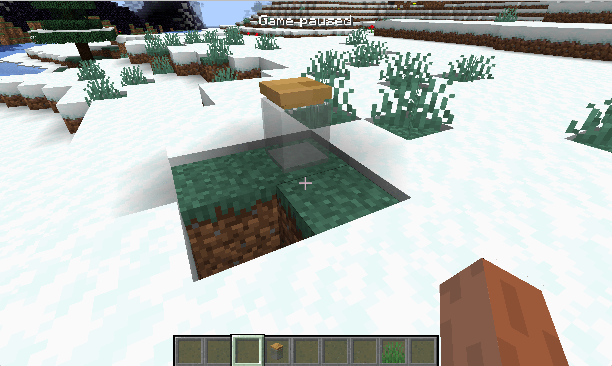
Special Model
OBJ Model
In this section we will learn how to add an OBJ item model to the block
First create our block ObsidianOBJ.java:
public class ObsidianOBJ extends Block {
public ObsidianOBJ() {
super(Properties.create(Material.ROCK).hardnessAndResistance(5).notSolid());
}
}
It is consistent with the method created before, because the model we created is not solid, so the notSolid method is added.
Registry Block:
public static final RegistryObject<Block> obsidanObj = BLOCKS.register("obsidian_obj", ObsidianOBJ::new);
Registry Item：
public static final RegistryObject<Item> obsidianObj = ITEMS.register("obsidian_obj", () -> new BlockItem(BlockRegistry.obsidanObj.get(), new Item.Properties().group(ModGroup.itemGroup)));
BlockState file obsidian_obj.json
{
"variants": {
"": { "model": "boson:block/obsidian_obj" }
}
}
Model's json file obsidian_obj.json
{
"loader": "forge:obj",
"model": "boson:models/block/obsidian_obj.obj",
"flip-v": true
}
As you can see, it is a bit special from here. First, we use loader to specify that the model we want to load is in obj format, then specify our OBJ model in model, and finally flip -v is set to true. The reason for this is that the textures in minecraft and your material in blender and other tools are upside down, so you have to manually flip your textures.
Next is the OBJ model obsidian_obj.obj, here only the places that need to be modified are marked:
mtllib obsidian_obj.mtl
You must specify the name of the mtl file you want to use here.
Next is the mtl file obsidian_obj.mtl. Similarly, I only mark the places that need to be modified here.
map_Kd boson:block/obsidian_obj
You must specify the material of your model file in this way.
Finally, our material obsidian_obj.png:

You can see that our OBJ model has been successfully loaded. Of course, we haven't set up the correct collision box here, and this is left to the reader to implement.
Items can also use the OBJ model, please explore by yourself.
Common Problem and Solutions
Ambient light
By default, you may find that your model has unnatural black shadows like the picture below. This is caused by ambient light occlusion. You can modify the block by overwriting the getAmbientOcclusionLightValue method under the Block class Ambient light occlusion, the default is 0.2, and the maximum value is 1. The larger the value, the smaller the ambient light occlusion.
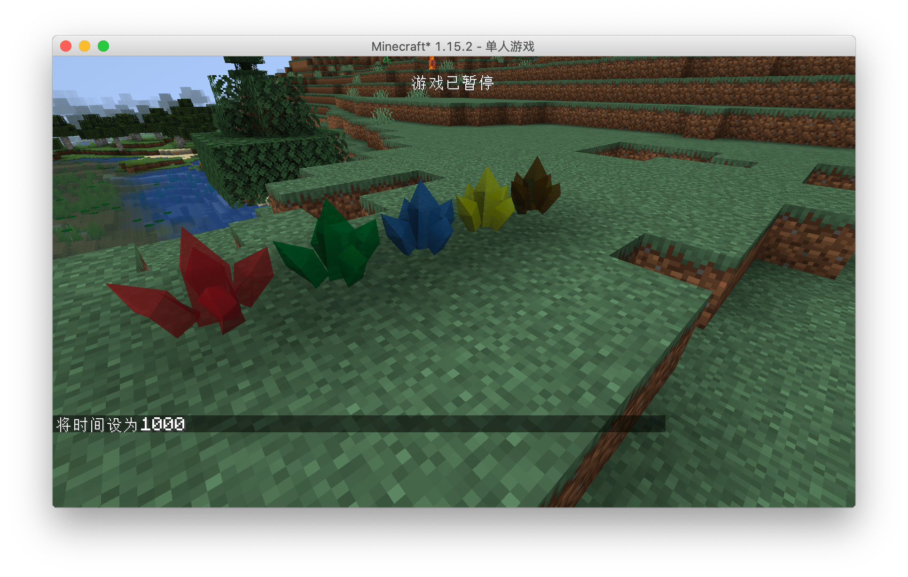
Unnatural highlights at night
Sometimes you will find that your model will emit unnatural highlights like this at night. This is caused by the extra attributes in the mtl file. For Mod development, it is recommended to keep only the map_Kd attribute. For details, please see IE mtl file.
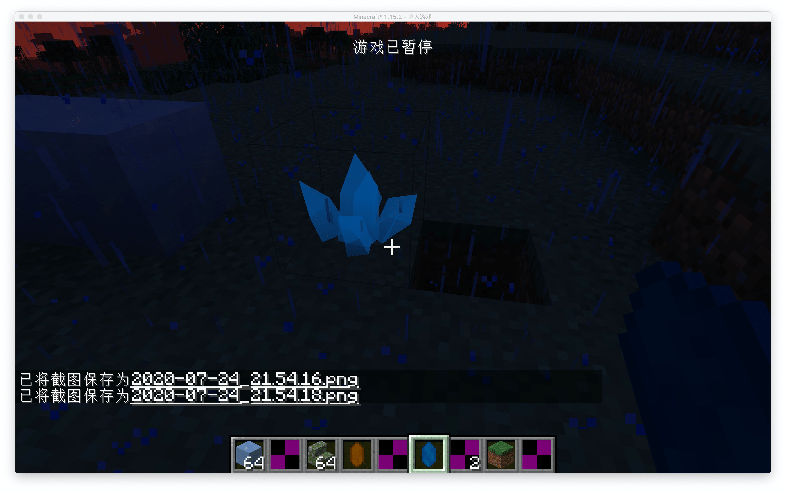
Modding Crash Course
If you are using Blender to make an OBJ model, please set the center point of your model to X:0.5m,Y-0.5m,Z:0.5, so you don't need to perform additional offset calculations in the json file . A full cube in Minecraft is exactly 1m*1m*1m in Blender.
TileEntity
First TileEntity and Data Storage
In this section, we will learn how to create a block entity of our own. Let’s take a counter as an example. Its only function is to increase by one when you right-click the block, and then send the corresponding one to your chat box value.
First, let's create our Block ObsidianCounter.java:
public class ObsidianCounter extends Block {
public ObsidianCounter() {
super(Properties.create(Material.ROCK).hardnessAndResistance(5));
}
@Override
public boolean hasTileEntity(BlockState state) {
return true;
}
@Nullable
@Override
public TileEntity createTileEntity(BlockState state, IBlockReader world) {
return new ObsidianCounterTileEntity();
}
@Override
public ActionResultType onBlockActivated(BlockState state, World worldIn, BlockPos pos, PlayerEntity player, Hand handIn, BlockRayTraceResult hit) {
if (!worldIn.isRemote && handIn == Hand.MAIN_HAND) {
ObsidianCounterTileEntity obsidianCounterTileEntity = (ObsidianCounterTileEntity) worldIn.getTileEntity(pos);
int counter = obsidianCounterTileEntity.increase();
TranslationTextComponent translationTextComponent = new TranslationTextComponent("message.neutrino.counter", counter);
player.sendStatusMessage(translationTextComponent, false);
}
return ActionResultType.SUCCESS;
}
}
We won't go into details about the registration part, here we will talk about a few functions. The first thing to talk about is the set of functions hasTileEntity and createTileEntity (**Please note that the two methods here are not @Deprecated, that is, they are not "crossed" after you rewrite What we need to rewrite is the method under the ʻIForgeBlockinterface, please be careful not to rewrite the wrong method**), this set of functions allows your block to be bound to a block entity, and the return value ofhasTileEntityis set totrue , it means that our block has a block entity. The function createTileEntitydetermines which block entity our block is. In our case, it isObsidianCounterTileEntity`.
Let's skip the onBlockActivated method first to see what is in our block entity.
ObsidianCounterTileEntity:
public class ObsidianCounterTileEntity extends TileEntity {
private int counter = 0;
public ObsidianCounterTileEntity() {
super(TileEntityTypeRegistry.obsidianCounterTileEntity.get());
}
public int increase() {
counter++;
markDirty();
return counter;
}
}
As you can see, the content in this block entity is very simple, with only one construction method and one increase method. The increase method is related to the specific content we want to achieve. Here, let's first look at the construction method.
super(TileEntityTypeRegistry.obsidianCounterTileEntity.get());
In the construction method here, we passed a TilEnttityType to our parent class, so what is this TilEntityType? This TileEntityType hence the name implies the "type" of the block entity. This "type" specifies how our block entity should be created and which blocks it is bound to. Next we will take a look at our TilEntityType How was it created and registered?
Then we created a new class called TileEntityTypeRegistry:
public class TileEntityTypeRegistry {
public static final DeferredRegister<TileEntityType<?>> TILE_ENTITIES = DeferredRegister.create(ForgeRegistries.TILE_ENTITIES, Utils.MOD_ID);
public static final RegistryObject<TileEntityType<ObsidianCounterTileEntity>> obsidianCounterTileEntity = TILE_ENTITIES.register("obsidian_counter_tileentity", () -> TileEntityType.Builder.create(ObsidianCounterTileEntity::new, BlockRegistry.obsidianCounterBlock.get()).build(null));
}
The first is the type, because TileEntityType is a generic class, and its generics can contain various TileEntity, so when we define TILE_ENTITIES, the type in DeferredRegister is TileEntityType<?>, the question mark here means that various TileEntityType such as TileEntityType<AEntity> and TileEntityType<BEntity> can be registered in TILE_ENTITIES.
Then the type of our variable, because we are going to register TileEntityType for ObsidianCounterTileEntity, so the type we need is naturally TileEntityType<ObsidianCounterTileEntity>.
The most complicated thing here should be the specific registration process, but it is not difficult to understand. The same as before, it is the registered name and a registered object. We can split this complicated sentence apart.
TILE_ENTITY_TYPE_DEFERRED_REGISTER.register("obsidian_counter_tileentity",()-> ...);
If we omit a series of complicated content inside, the core of this code is such a sentence, I believe everyone can understand this, the key point here is the "..." we omitted.
The previously omitted content is as follows:
TileEntityType.Builder.create(ObsidianCounterTileEntity::new, BlockRegistry.obsidianCounterBlock.get()).build(null));
As you can see, here we first call the TileEntityType.Builder.create method, which is a method provided by Minecraft to create a TileEntityType, and then call the build method. Let's first look at the parameters in the build method. In build we passed in a null. In fact, this place can be filled with an instance called datafix, which is used to archive different versions before Converted. Here we do not have this requirement (most mods are not expected to be realized), so we fill in a null.
Then we look back at the two parameters in TileEntityType.Builder.create, the first parameter is a supplier, here we fill in the method reference of the construction method of the block entity, and the second type is and For the associated block, here we fill in the instance of our registered ObsidianCounterBlock. As for the registration of the block, I believe that the readers here have the ability to solve it by themselves.
This way the content is a lot less at once, but for the convenience of readers' understanding, I still use the above writing method. Of course, don't forget to register TILE_ENTITIES in the Mod bus in your Mod main class.
Then we can take a look at our logic
@Override
public ActionResultType onBlockActivated(BlockState state, World worldIn, BlockPos pos, PlayerEntity player, Hand handIn, BlockRayTraceResult hit) {
if (!worldIn.isRemote && handIn == Hand.MAIN_HAND) {
ObsidianCounterTileEntity obsidianCounterTileEntity = (ObsidianCounterTileEntity) worldIn.getTileEntity(pos);
int counter = obsidianCounterTileEntity.increase();
TranslationTextComponent translationTextComponent = new TranslationTextComponent("message.neutrino.counter", counter);
player.sendStatusMessage(translationTextComponent, false);
}
return ActionResultType.SUCCESS;
}
The first is the block's onBlockActivated method. Please note that there are two onBlockActivated methods with the same name but different return values. Don't rewrite the method wrong.
if (!worldIn.isRemote && handIn == Hand.MAIN_HAND)
First of all, we judged whether our method is called on the server side. Remember that any logic that involves data processing should be executed on the server side. In addition, we also judged whether the incoming handIn is the "master hand". This judgment is made because this method will be executed once for both hands.
ObsidianCounterTileEntity obsidianCounterTileEntity = (ObsidianCounterTileEntity) worldIn.getTileEntity(pos);
Here we call the worldIn.getTileEntity method to get the TileEntity corresponding to our block. The reason must be called by this method is that even if a block is bound to a TileEntity, you cannot guarantee that this TileEntity It must exist.
int counter = obsidianCounterTileEntity.increase();
Then we here increase and get the value by calling the increase method of our obsidianCounterTileEntity.
public int increase() {
counter++;
return counter;
}
The content of the increase method is very simple, I believe everyone can understand it.
TranslationTextComponent translationTextComponent = new TranslationTextComponent("message.neutrino.counter", counter);
Then there is this sentence, first we create a TranslationTextComponent, here is the content we want to send to the player's chat box. As its name implies, this is a translated text, so it should be a "key" rather than a specific content, "message.tour14.counter" is the "key" value, we also passed in later The count value obtained, the reason for this, we first press the table.
First, we add the following content to the language file (take English as an example).
"message.neutrino.counter": "count: %d"
You can see that there is a %d here. At this time, the reason why we need to pass in our value is very clear. In fact, the value of our counter variable is formatted through %d .
player.sendStatusMessage(translationTextComponent, false);
Finally, we call this statement and send a message to the player. Please note that because we have judged !worldIn.isRemote before, although this code is executed on the server side, because the specific message is displayed on the client side , So we need to send a message to the client by sending a package. Fortunately, Minecraft provides us with this method to send data, so we don’t need to implement it ourselves.

You can see that our block can be successfully counted.
But there is a bug in this block. When you exit the current save and re-enter, you will find that our counter starts counting from 0 again. Next, let's fix this problem.
The reason for this bug is that when the save is running, the value of the counter exists in the memory and can function normally, but when the game is closed, because the important data in the memory is not saved to your hard disk, so open it next time During the game, these data cannot be reloaded and restored. Before our TileEntity did not implement this save and restore function, we will add this function to it next.
The content of the ObsidianCounterTileEntity after the addition is as follows:
public class ObsidianCounterTileEntity extends TileEntity {
private int counter = 0;
public ObsidianCounterTileEntity() {
super(TileEntityTypeRegistry.obsidianCounterTileEntity.get());
}
public int increase() {
counter++;
markDirty();
return counter;
}
@Override
public void read(BlockState state, CompoundNBT nbt) {
counter = nbt.getInt("counter");
super.read(state, nbt);
}
@Override
public CompoundNBT write(CompoundNBT compound) {
compound.putInt("counter", counter);
return super.write(compound);
}
}
As you can see, compared to the previous code, we have overwritten the write and read methods. These two methods are used to save and restore data. In Minecraft, all data should ultimately be saved in NBT format (unless you implement the save method yourself), and the NBT tag in the code is represented by CompoundNBT. NBT tags are also a "key-value pair" structure, and each value has a corresponding name. The method at the beginning of put is to write a value to the NBT tag, and the method at the beginning of get is to get the value. In addition to CompoudNBT, there is also the ListNBT class to represent the NBT tag of the array type.
The write here is the method of data saving. Its incoming value is the NBT tag that has been saved by other classes before, and its return value is the NBT tag that will eventually be saved to the hard disk (there are other classes to write Enter), under normal circumstances, you should call return super.write(compound); to do the final return.
The read method is just the opposite, here we call the counter = compound.getInt("counter"); method to restore the data of our counter. Similarly, you should call super.read(compound); to do the final return.
Another very important thing is
public int increase() {
counter++;
markDirty();
return counter;
}
We have added the markDirty() method here. This method means to mark our data as modified so that the game knows to save and call the save method when it is closed. This is because compared to the execution speed of the CPU, the saving and reading and writing speed of the hard disk is very slow, so if frequent saving and reading and writing operations will seriously slow down the speed of the game, a reasonable way is to mark that we need to save The data is then saved together at a unified point in time, the role of markDirty() is exactly this.
ITickableTileEntity
In this section, we will learn about one of the most important interfaces in TileEntity: ITickableTileEntity.
In this section, we will take the creation of a box that automatically greets us as an example to reflect the function of this interface.
ObsidianHelloBlock:
public class ObsidianHelloBlock extends Block {
public ObsidianHelloBlock() {
super(Properties.create(Material.ROCK).hardnessAndResistance(5));
}
@Override
public boolean hasTileEntity(BlockState state) {
return true;
}
@Nullable
@Override
public TileEntity createTileEntity(BlockState state, IBlockReader world) {
return new ObsidianHelloTileEntity();
}
}
ObsidianHelloTileEntity:
public class ObsidianHelloTileEntity extends TileEntity implements ITickableTileEntity {
private static final int MAX_TIME = 5 * 20;
private int timer = 0;
public ObsidianHelloTileEntity() {
super(TileEntityTypeRegistry.obsidianHelloTileEntity.get());
}
@Override
public void tick() {
if (world != null && !world.isRemote) {
if (timer == MAX_TIME) {
PlayerEntity player = world.getClosestPlayer(pos.getX(), pos.getY(), pos.getZ(), 10, false);
TranslationTextComponent translationTextComponent = new TranslationTextComponent("message.hello_block.hello");
if (player != null) {
player.sendStatusMessage(translationTextComponent, false);
}
timer = 0;
}
timer++;
}
}
}
In fact, the code of this block entity is much simpler than the code of the first block entity we made. You can see that we have implemented the ITickableTileEntity interface here. This interface has only one method that needs to be implemented, which is the tick method, so the name implies. This will be executed once in each game tick. We have made a counter here, and then The nearest player within 10 block around the block position is obtained through the world.getClosestPlayer method, and then a TranslationTextComponent message is created, and finally player.sendStatusMessage is called to send the message to the player, and the sendStatusMessage accepts ITextComponent interface.
Don't forget the translation of language files:
"message.hello_block.hello": "Hello"
Register TileEntityType:
public static RegistryObject<TileEntityType<ObsidianHelloTileEntity>> obsidianHelloTileEntity = TILE_ENTITIES.register("obsidian_hello_tileentity", () -> TileEntityType.Builder.create(ObsidianHelloTileEntity::new, BlockRegistry.obsidianHelloBlock.get()).build(null));
The other registration and creation of model files are omitted here, and I believe that readers have the ability to complete them independently.
Open the game and get close to the block
You can see that our block is greeting us.

Data synchronization built into the block entity
In this section, we will learn about the data synchronization function built into the block entity.
Remember the data synchronization between the server and the client we talked about before? Fortunately, TileEntity has built-in two sets of data synchronization methods for us. Unfortunately, these two sets of methods can only synchronize data from the server to the client, and can only synchronize a small amount of data.
In this section, we will learn how to make a box that plays the roar of the zombie every few seconds. Let's start with the box;
ObsidianZombieBlock
public class ObsidianZombieBlock extends Block {
public ObsidianZombieBlock() {
super(Properties.create(Material.ROCK).hardnessAndResistance(5));
}
@Override
public boolean hasTileEntity(BlockState state) {
return true;
}
@Nullable
@Override
public TileEntity createTileEntity(BlockState state, IBlockReader world) {
return new ObsidianZombieTileEntity();
}
}
Then there is ObsidianZombieTileEntity.
public class ObsidianZombieTileEntity extends TileEntity implements ITickableTileEntity {
private boolean flag = false;
private int MAX_TIME = 5 * 20;
private int timer = 0;
public ObsidianZombieTileEntity() {
super(TileEntityTypeRegistry.obsidianZombieTileEntity.get());
}
@Override
public void tick() {
if (world.isRemote && flag) {
PlayerEntity player = world.getClosestPlayer(pos.getX(), pos.getY(), pos.getZ(), 10, false);
this.world.playSound(player, pos, SoundEvents.ENTITY_ZOMBIE_AMBIENT, SoundCategory.AMBIENT, 1.0f, 1.0f);
flag = false;
}
if (!world.isRemote) {
if (timer == MAX_TIME) {
flag = true;
world.notifyBlockUpdate(pos, getBlockState(), getBlockState(), Constants.BlockFlags.BLOCK_UPDATE);
flag = true;
timer = 0;
}
timer++;
}
}
@Nullable
@Override
public SUpdateTileEntityPacket getUpdatePacket() {
return new SUpdateTileEntityPacket(pos, 1, getUpdateTag());
}
@Override
public void onDataPacket(NetworkManager net, SUpdateTileEntityPacket pkt) {
handleUpdateTag(world.getBlockState(pkt.getPos()), pkt.getNbtCompound());
}
@Override
public CompoundNBT getUpdateTag() {
CompoundNBT compoundNBT = super.getUpdateTag();
compoundNBT.putBoolean("flag", flag);
return compoundNBT;
}
@Override
public void handleUpdateTag(BlockState state, CompoundNBT tag) {
flag = tag.getBoolean("flag");
}
}
First, let's explain the method used to synchronize the two sets of data.
getUpdatePacketonDataPacket
These two methods are data synchronization methods that will be used during normal games. Their names may be a little confusing, because getUpdatePacket is the method used by the server to send data packets, and onDataPacket is the client accepts Data packet method.
Next is:
getUpdateTaghandleUpdateTag
These two methods are called when the block is just loaded. The reason why these two methods exist is because some decorative block entities do not need to synchronize data frequently, such as billboards. Synchronize once when the block is loaded.
In order for your block entity to automatically synchronize data when the game is loaded, you need to implement getUpdateTag and handleUpdateTag first, and then call them in getUpdatePacket and onDataPacket.
If you need to trigger data synchronization, you need to call the world.notifyBlockUpdate method on the server.
Of course, just like data storage, the default serialization and deserialization methods of these methods are NBT tags.
@Override
public CompoundNBT getUpdateTag() {
CompoundNBT compoundNBT = super.getUpdateTag();
compoundNBT.putBoolean("flag", flag);
return compoundNBT;
}
@Override
public void handleUpdateTag(BlockState state, CompoundNBT tag) {
flag = tag.getBoolean("flag");
}
As you can see, the data is transmitted with the NBT tag.
@Nullable
@Override
public SUpdateTileEntityPacket getUpdatePacket() {
return new SUpdateTileEntityPacket(pos, 1, getUpdateTag());
}
@Override
public void onDataPacket(NetworkManager net, SUpdateTileEntityPacket pkt) {
handleUpdateTag(world.getBlockState(pkt.getPos()), pkt.getNbtCompound());
}
Here we simply call the previous two methods. You can fill in the serial number value of the second parameter of SUpdateTileEntityPacket.
Then there is our main logic tick method:
@Override
public void tick() {
if (world.isRemote && flag) {
PlayerEntity player = world.getClosestPlayer(pos.getX(), pos.getY(), pos.getZ(), 10, false);
this.world.playSound(player, pos, SoundEvents.ENTITY_ZOMBIE_AMBIENT, SoundCategory.AMBIENT, 1.0f, 1.0f);
flag = false;
}
if (!world.isRemote) {
if (timer == MAX_TIME) {
flag = true;
world.notifyBlockUpdate(pos, getBlockState(), getBlockState(), Constants.BlockFlags.BLOCK_UPDATE);
flag = true;
timer = 0;
}
timer++;
}
}
For your convenience, I have used two if statements here to distinguish the logic between the client and the server
The first is the client:
if (world.isRemote && flag) {
PlayerEntity player = world.getClosestPlayer(pos.getX(), pos.getY(), pos.getZ(), 10, false);
this.world.playSound(player, pos, SoundEvents.ENTITY_ZOMBIE_AMBIENT, SoundCategory.AMBIENT, 1.0f, 1.0f);
flag = false;
}
First, we judge whether it is on the client side, and whether the value of flag is true (true means to play the sound), and then get the nearest player, use the this.world.playSound method to play the sound, please pay attention, play the sound It can be executed on the client and the server at the same time. If you execute it on the server, a data packet will be sent to the client automatically and the client will play the sound.
The first and second variables of playSound are easy to understand. The third variable is the sound to be played, and the third variable determines which sound control category controls the size of the sound.
Next is the server:
if (!world.isRemote) {
if (timer == MAX_TIME) {
flag = true;
world.notifyBlockUpdate(pos, getBlockState(), getBlockState(), Constants.BlockFlags.BLOCK_UPDATE);
flag = true;
timer = 0;
}
timer++;
}
The server is basically a counter as before. The only special thing is that we call the world.notifyBlockUpdate method, because we don't need to update the blockstate, so the second and third parameters are the same. The last parameter What level of update is needed, Forge provides us with the Constants class, which has detailed instructions.
Then there are things like adding textures and models, and interested readers can read the source code for themselves.
After opening the game and placing the blocks, wait a while and you should be able to hear the roar of the zombies.
Special render
IBakedModel
TileEntityRneder
ItemStackTileEntityRenderer
Event System
Network
Network Packet
Network Security
Entity
First Entity and Data Sync
Animal and AI
Capability System
Capability from Scratch
Use Predefined Capability
Attach Capability provider
WorldSavedData
Gui
First Gui
Container
HUD
Fluid
World Generation
Ore Generation
Structure Generation
Customize Biome and World Type
Customize Dimension
Data Pack
Recipe
LootTable
Data Generator
Command
Advancements
Configure
Potion
Paticle
Sounds
In this section, we'll talk about learning how to add sound effects to my mods, and it's very simple, so let me get started.
public class SoundEventRegistry {
public static final DeferredRegister<SoundEvent> SOUNDS = DeferredRegister.create(ForgeRegistries.SOUND_EVENTS, Utils.MOD_ID);
public static final RegistryObject<SoundEvent> meaSound = SOUNDS.register("mea", () -> new SoundEvent(new ResourceLocation(Utils.MOD_ID, "mea")));
}
With those two sentences, you can register our sound effects.
Next, let's add sound effects and create the following files and directories in your Resource directory.
resources
├── META-INF
│ └── mods.toml
├── assets
│ └── boson
│ ├── blockstates
│ ├── lang
│ ├── models
│ ├── sounds
│ ├── sounds.json
│ └── textures
├── data
└── pack.mcmeta
Here we have created a sounds.json, please refer to the wiki for the format of this file.
It reads as follows
{
"mea": {
"subtitle": "mea",
"replace": "true",
"sounds": [
{
"name": "boson:mea",
"steam": true
}
]
}
}
Note that the outermost key name should be the same as the second parameter in your previous ResourceLocation. We then specify the specific audio file in name. Please note that Minecraft only allows loading of audio files in ogg format.
Next, we place the finished audio file in the sounds file.
resources
├── META-INF
│ └── mods.toml
├── assets
│ └── boson
│ ├── blockstates
│ ├── lang
│ ├── models
│ ├── sounds
│ │ └── mea.ogg
│ ├── sounds.json
│ └── textures
├── data
└── pack.mcmeta
Place the directory as above.
Next you can create objects to use with our sound effects!
public class SoundTestItem extends Item {
public SoundTestItem() {
super(new Properties().group(ModGroup.itemGroup));
}
@Override
public ActionResult<ItemStack> onItemRightClick(World worldIn, PlayerEntity playerIn, Hand handIn) {
if (worldIn.isRemote) {
worldIn.playSound(playerIn, playerIn.getPosition(), SoundEventRegistry.meaSound.get(), SoundCategory.AMBIENT, 10f, 1f);
}
return super.onItemRightClick(worldIn, playerIn, handIn);
}
}
Open the game and try it out, we should have successfully added sound effects.